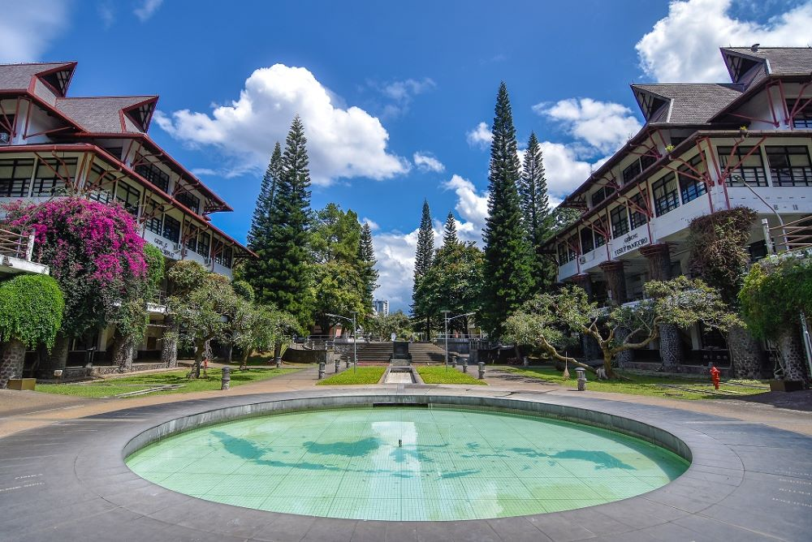

Institut Teknologi Bandung (ITB) merupakan sekolah tinggi teknik pertama di Indonesia yang didirikan pada tanggal 3 Juli 1920 sebagai de Technische Hoogeschool te Bandoeng (TH). Tanggal 2 Maret 1959 diresmikan sebagai ITB dengan misi pengabdian ilmu pengetahuan dan teknologi untuk memajukan Indonesia. ITB hadir untuk mengoptimalkan pembangunan bangsa yang maju dan bermartabat.